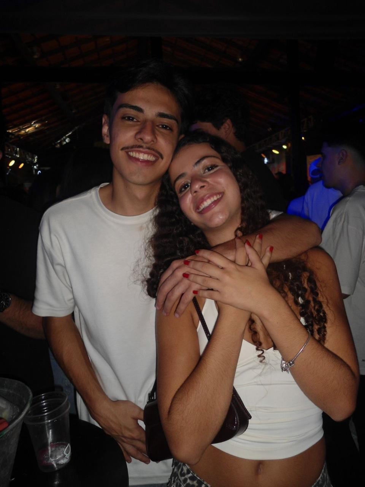
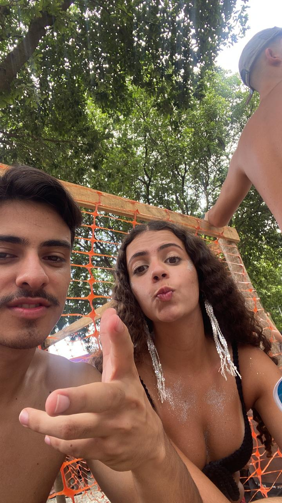
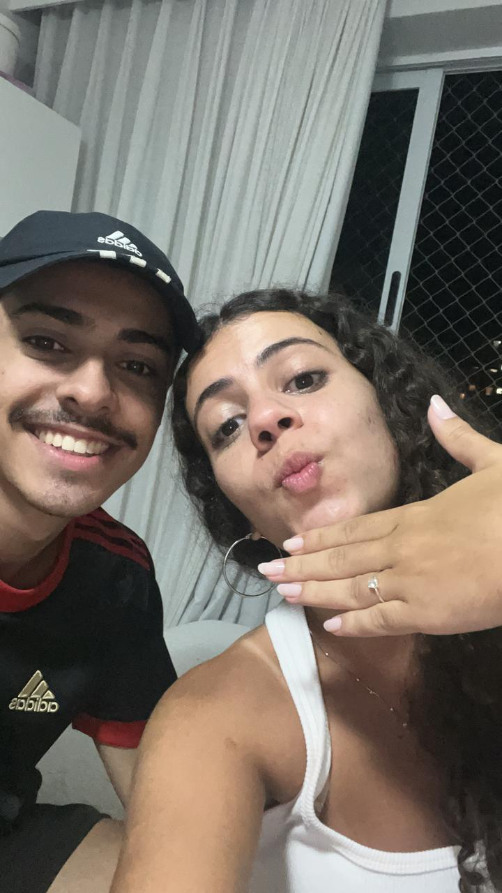
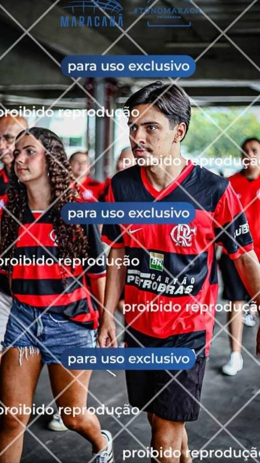
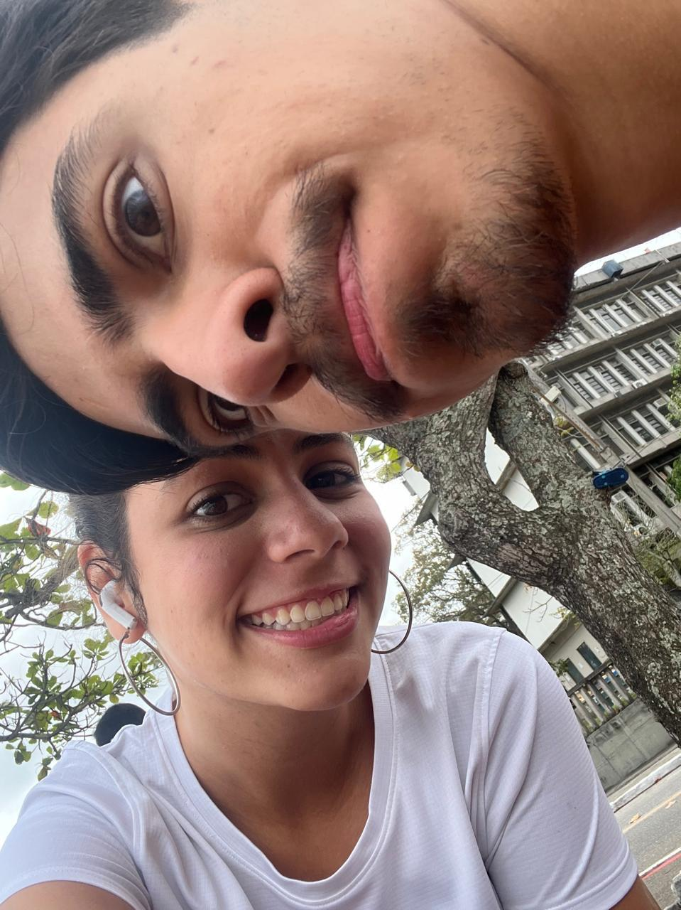
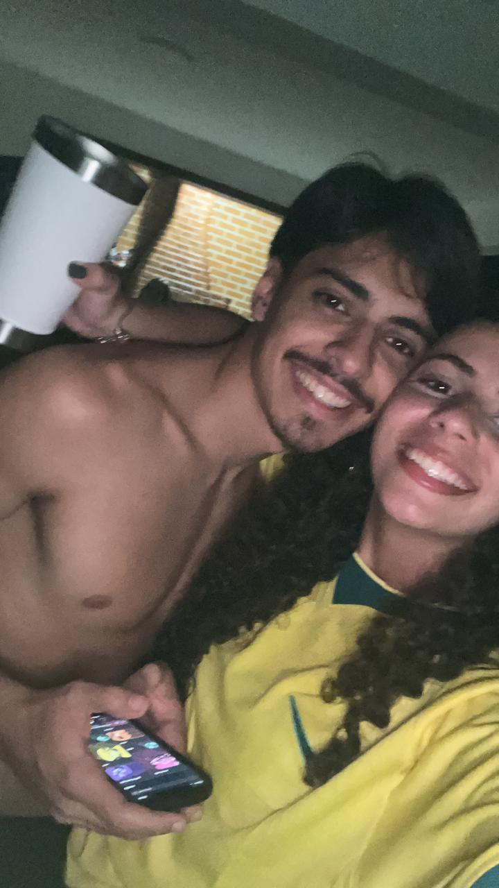
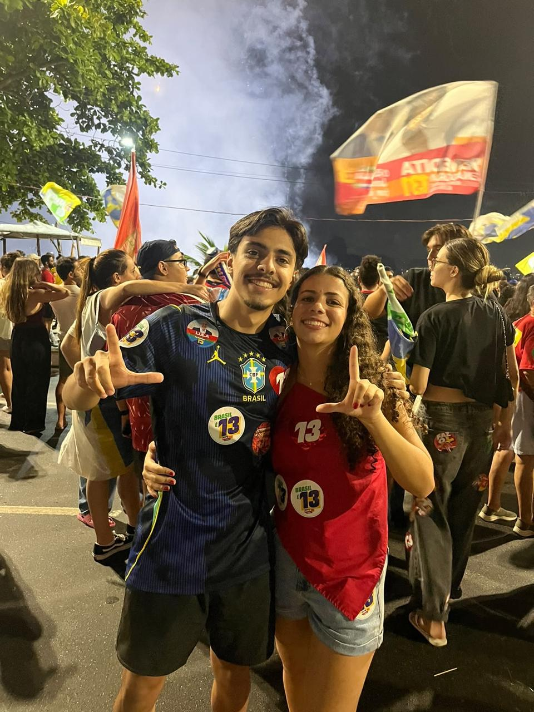

amor, queria te dar esse presente que não possui valor material,
mas ele expressa como foi meu ano, e como você foi especial pra mim.
não da pra começar a falar do ano sem citar o começo dele, então vamos voltar pro dia em que me declarei pela primeira vez pra você...
toque no ▶ para ouvir
segue algumas fotos com momentos nossos desse ano maravilhoso( um dos melhores da minha existência até o momento):

Nossa primeira foto
nossa primeira foto... nem sabíamos se de fato íamos ficar juntos, mas ali já tava existindo um: e se namorar?! e por aqui a gente ve que somos muito lindos juntos ( até ficou com ciúme de mim esse dia KKKKKK...) .

Carnaval
primeiro carnaval juntos, esse dia ai fiquei doidao kkkkkk. aqui eu já sabia que eu ia namorar você ( até por que você já tava esperando ne) e já estava completamente apaixonado

Pedido de namoro
esse pedido de namoro que eu nem esperava, so sabia que eu ia pedir, até porque já não dava mais pra esperar. te amando muito já e te considerando como minha namorada (clarinho que sim) olha meu amorzão com o anel lindo... te amo muito

Maracanã
minha primeira vez com meu amor no maracanã depois de anos sem ir. obs: sempre chamei meu pai e ele tinha preguiça, ai eu te encontrei e namorando com o amor da minha vida comecei a ir e todas as vezes é especial, amo namorar uma flamenguista linda, frequentadora de maracanã, mais um TE AMO!

Correndo com meu amor
apesar de nunca mais acordarmos cedo pra fazer exercício e das poucas vezes que fizemos foram muito melhor do que sozinho. a sua companhia me traz paz, alegria, animo, ( esse dia eu até corri mais) e sempre envolvendo seu amor, que é inexplicável
Estudando
estudando com meu amor na viagem de aniversario do seu pai. que foi muito legal por sinal, sempre com você me incentivando a estudar que eu vou conseguir chegar, no mundo pode todo mundo desacreditar de mim, você não descredita, me apoia e incentiva.

Copa do Mundo
primeira copa do mundo com meu amor!!!! apesar do resultado foi muito bom. se não fosse por você eu não teria nem comprado a blusa, mas ai meu amor pediu... não tem jeito, preciso te agradar.

Lula tetra
obrigado por estar na festa da democracia comigo, foi muito especial e já estive comemorando em 2022, mas como eu já disse e você já esta cansada de ouvir: com você é tudo especial, ganhamos e fomos felizes.
meu amor,
queria te agradecer por tudo que você fez esse ano comigo, por me aguentar sempre quando eu to chato ou estranho.
você é minha maior conquista da vida, tenho certeza que se todos tivessem uma Julia seriam muito mais felizes e iriam ser pessoas melhores.
obrigado por você sempre me apoiar e incentivar e que possamos passar mais um resto da vida juntos, eu sou extremamente apaixonado e imagino todos os cenários da vida com você. de uma saída simples pra comer a ver o nascimento dos nossos filhos.
eu temho uma certeza na vida, o que depender de mim pra te fazer feliz, eu irei fazer, quero te agradar e te exaltar quando você não estiver comigo.
eu tenho orgulho de cada conquista e espaço que você vai ganhando nesse mundo tão perigoso. te amo muito, amo te amar, amo ser seu namorado, amo cada detalhe seu, amo ver você dormindo...
você pra sempre sera meu boxexãoooo
feliz 2027!
que possamos comemorar até o fim das nossas vidas
att: sua vidona